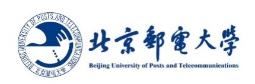

项目团队
本项目由北京邮电大学牵头，联合香港中文大学（深圳）、山东省计算中心（国家超级计算济南中心）组成，共同开展广域RDMA传输控制技术研究。
承担单位
PARTICIPATING INSTITUTIONS牵头单位

北京邮电大学
北京邮电大学是新中国第一所邮电高等学府，是教育部直属、工业和信息化部共建的全国重点大学。作为我国的"信息黄埔"，学校不仅是我国信息和通信领域重要的人才培养基地，更是面向世界信息通信科技前沿、国家重大需求，突出科技前沿技术，关键共性技术创新的桥头堡。学校拥有一级学科博士学位授权点11个，双一流建设学科2个（信息与通信工程、计算机科学与技术）。现有全国重点实验室3个（2个牵头建设，1个参与建设）、国家工程研究中心2个、国家国际科技合作基地1个、教育部重点实验室5个、教育部工程研究中心3个、网信办/教育部网络空间国际治理研究基地1个、文旅部重点实验室1个、北京实验室1个、北京市重点实验室5个。在无线移动通信、光通信、未来网络、星地计算、物联网智能感知计算、卫星导航与定位、网络安全等领域重大科技成果不断涌现，实现众多基础理论研究和关键核心技术新的突破，近五年获国家科技发明奖、国家科技进步奖、省部级科研奖励、电子学会科学技术奖、通信学会科学技术奖90余项。
北京邮电大学网络与交换技术全国重点实验室，是1988年由国家计委/国家教委批准立项建设的首批国家重点实验室之一，2005年更名为"网络与交换技术国家重点实验室"，2023年重组为"网络与交换技术全国重点实验室"，在人财物等方面获得学校最高优先级保障。实验室围绕"服务国家战略目标、面向国际科技前沿、着力提高原始创新能力"的目标，将网络服务、网络管控、网络安全及网络体系结构作为主要研究方向，始终坚持将服务国家高水平科技自立自强作为光荣使命，加快打造信息通信领域国家战略科技力量。专职研究队伍拥有陈俊亮、刘韵洁和张平专职院士3人、教授57人、副教授47人，研究员4人、副研究员6人，聚集了一批在信息通信领域具有较高水平和学术声誉的专家学者。全国重点实验室组织结构清晰，以于全院士为学术委员会主任，以徐坤校长为管理委员会主任，建立主任负责机制，创新科研组织模式。在网络通信领域已建设完成国内顶尖的研发体系和试验环境，拥有包括未来网络试验设施CENI、6G智简网络通用原型验证系统、2000公里级400GE IP确定性广域网络、基于先进空口协议的网络仿真试验环境、网络服务理论成果半实物验证平台等，对本项目的顺利实施提供丰富的实验验证环境和技术支撑。
参与单位
香港中文大学（深圳）
香港中文大学（深圳）成立于2014年，以立足中国、面向世界的一流研究型大学为己任，被誉为"香港融入国家发展的成功样板"。未来智联网络研究院成立于2018年10月，以崔曙光院士为学术带头人，面向未来智联网络国家重大战略方向，聚焦AI赋能智能网络理论、智能物联网、语义通信理论等前沿问题，攻关核心算法、核心器件等卡脖子关键技术。主持完成国家重点研发计划项目《基于数据驱动和人工智能的未来新型网络演进（2018YFB1800800）》、广东省重点领域研发计划等科研项目40余项，获得国家自然科学二等奖、中国电子学会一等奖、中国通信学会一等奖、IEEE马可尼最佳论文奖等50余项。
山东省计算中心（国家超级计算济南中心）
山东省计算中心（国家超级计算济南中心）成立于1976年，拥有国家超级计算济南中心、算力互联网与信息安全教育部重点实验室、山东省计算机网络重点实验室等国家级/省部级平台10个，参与泉城实验室、济南国家新一代人工智能创新发展试验区、济南国家综合性科学中心、山东"超级计算"大科学工程等平台建设。近五年，中心牵头主持完成国家重点研发计划项目、山东省重点研发计划项目等国家级/省部级重大科研项目10余项，获国家科技进步二等奖1项、山东省科技进步一等奖5项，发布国际/国家标准25项。2011年，中心建成我国首台完全采用自主处理器研制的千万亿次超级计算机神威蓝光，标志着我国成为继美国、日本后第三个能够采用自主处理器构建千万亿次超级计算机系统的国家；2018年，开建E级超级计算原型机首次实现从处理器、网络芯片组等核心器件的完全国产化；2020年建成山河通用计算平台，是国内规模最大的超算/智算混合计算平台。中心长期聚焦超算互联网体系架构与关键技术研究，于2017年倡议建设国家超算互联网；2019年建成济南-青岛超算互联网示范工程，完成基于自研软硬件的InfiniBand协议卸载原型，围绕长距RDMA传输授权发明专利6项；2024年牵头建成全国首个覆盖省级区域的算网基础设施——山东算网。
承研人员
RESEARCH TEAM项目负责人
张乙然
北京邮电大学网络与交换技术全国重点实验室副研究员，博士生导师，网络服务研究团队网络方向负责人。2022年于清华大学获网络空间安全工学博士学位，2017年于北京邮电大学获计算机科学与技术专业学士学位。研究方向包括网络体系结构、数据中心网络、RDMA网络传输优化；主持或参与国家自然科学基金、重点研发计划等国家级/省部级项目多项；以第一作者在ACM SIGCOMM、NSDI、IEEE/ACM ToN、IEEE JSAC等计算机网络系统领域顶级期刊或会议发表论文20余篇，获Blocksys'23、ICWS'23、Euro-Par'22最佳论文奖，申请或授权发明专利12项，提交ISO国际标准提案2项、CCSA行业标准提案1项；担任IEEE云计算协会低时延数据中心网络标准化工作推进组组长、IEEE服务计算协会低时延服务供应标准化工作推进组组长；入选2024年度N2Women全球网络通信十大新星，获评中国电子学会科技进步奖一等奖（2023）、IEEE云计算技术创新奖（2022）、IEEE TCCLD青年成就奖（2022）、IEEE TCSVC青年成就奖（2022）；相关研究成果在华为云、腾讯、浪潮、烽火等多家企业推广应用。
项目骨干
王方鑫
香港中文大学（深圳）助理教授、博士生导师、校长青年学者，广东省青年拔尖人才，深圳市大数据和人工智能重点实验室副主任，理工学院计算机与信息工程硕博研究生项目主任。分别于加拿大西蒙弗雷泽大学、清华大学、北京邮电大学取得博士、硕士、学士学位。担任香港中文大学（深圳）网络与人工智能系统实验室主任，研究方向包括多媒体网络与系统，云边端协同计算，深度学习，大模型与边缘智能等。他在SIGCOMM、NSDI、TMC、TON、TVCG、INFOCOM、MM、VR等顶级会议期刊发表论文100余篇；担任CAS一区与CCF-A类期刊IEEE Transactions on Mobile Computing编委(Associate Editor)，JCR一区期刊Digital Communication and Network编委，IEEE Satellite 2023和ACM SIGCOMM EMS Workshop的程序委员会主席(TPC Chair)，ACM Multimedia 2025 领域主席，IWQoS 2022（CCF-B类会议）出版主席、分论坛主席；担任电子学会通信分会青年委员，计算机学会互联网专委会执行委员，IEEE多媒体技术委员会委员，通信学会高级会员；获广东省科技进步二等奖，入选广东省青年拔尖人才计划，入选中国科协青年托举人才计划，近三年连续入选斯坦福大学"世界前2%顶尖科学家榜单"，主持国自然面上项目、深圳市重点项目等10余项基金委、科技部、省市与横向项目。
谭立状
齐鲁工业大学（山东省科学院）山东省计算中心（国家超级计算济南中心）算力互联网与信息安全教育部重点实验室副研究员，硕士生导师；于2022年6月从北京交通大学移动专用网络国家工程研究中心（原下一代互联网互联设备国家工程实验室）获得信息与通信工程专业工学博士学位。2024年10月至2025年9月在韩国浦项科技大学担任博士后访问学者，2021年4月至2022年6月在字节跳动高速网络团队担任研发实习生。主持国家自然科学基金青年基金项目、国家重点研发计划（青年科学家项目）子课题、科技部中韩青年科学家交流计划中国青年科学家赴韩工作交流项目、山东省自然科学基金智慧计算联合基金重点项目、山东省自然科学基金青年基金项目、山东省网信领域软科学重点项目、中国高校产学研创新基金项目、中国教育和科研计算机网（CERNET）下一代互联网创新项目等国家级/省部级项目8项。以第一作者或通信作者发表IEEE TCC/TNSM/TVT/TCE/JSTARS、Elsevier CSR/DCN/SWEVO/COMNETS/JNCA/COMCOM等期刊和APNOMS/HPCC/ICCCN等会议论文20余篇，第一起草人授权发明专利5项；参编专著《网络操作系统SONiC：原理、技术与实践》（3/4）；作为主要起草人起草国家标准《智能计算 超算互联网 组网技术要求》（2/39）、参与起草CCSA行业标准10项，提交IETF草案2项，主编或参编《计算网络化研究报告》《算网融合技术与产业白皮书》《山东省网信领域新质生产力产业现状研究》等技术白皮书5项；研究成果获评IWCMC'26、APNOMS'25、NaNA'21最佳论文（提名）奖。